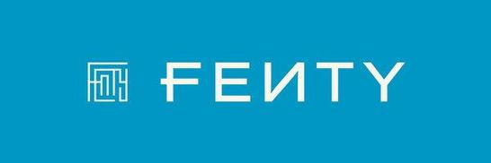

홈 > 브랜드 매거진 > Maison De Greef 1848
Maison De Greef 1848
1848년 프랑수아프로스페르 드 그리프가 브뤼셀 그랑플라스 인근 뤼 오 뵈르에 창업한 주얼리·시계 하우스다. 이후 여러 세대에 걸쳐 같은 자리에서 가업으로 이어지며 시계 제작과 금·은세공, 보석을 다루어 왔다. 벨기에 국영철도와 해군에 회중시계를 납품했고 벨기에 왕실 납품 자격을 보유한 헤리티지를 갖추었다. 2017년 창업지인 28번지로 매장을 확장하며 창업 약 170주년 시점에 리뉴얼을 단행했다.
산업 분야 패션·럭셔리 · 공개 등급 편집 검수 · 브랜드 평가 4 ★
Ma
Maison De Greef 1848
한눈에 보는 브랜드
1848년 프랑수아프로스페르 드 그리프가 브뤼셀 그랑플라스 인근 뤼 오 뵈르에 창업한 주얼리·시계 하우스다. 이후 여러 세대에 걸쳐 같은 자리에서 가업으로 이어지며 시계 제작과 금·은세공, 보석을 다루어 왔다.
벨기에 국영철도와 해군에 회중시계를 납품했고 벨기에 왕실 납품 자격을 보유한 헤리티지를 갖추었다. 2017년 창업지인 28번지로 매장을 확장하며 창업 약 170주년 시점에 리뉴얼을 단행했다.
브랜드 관점
드 그리프는 철도·해군 같은 공공 기관에 정밀 시계를 공급하며 신뢰를 쌓았고, 이 실용적 기반 위에 패션 주얼리와 사치재를 더해 고급 하우스로 성장했다. 오늘날에는 파텍 필립, 예거 르쿨트르, 카르티에, 제니스 등 명품 시계의 정식 리테일러로서 입지를 굳혔다.
보존 대상인 매장 파사드를 복원하고 인접 점포를 통합한 2017년 확장은 헤리티지 보존과 현대적 리테일 경험을 동시에 겨냥한 행보로 읽힌다.
시작과 성장
메종 드 그리프 1848은 1848년 벨기에 브뤼셀 뤼 오 뵈르 24번지에서 시작된 주얼리·시계 하우스로, 설립 직후 벨기에 국유철도의 공식 시계 제작자이자 벨기에 해군 회중시계 공급사가 되었다. 19세기 말 벨 에포크 시기에는 회중시계, 패션 주얼리, 은세공품을 다루며 브뤼셀의 대표적 명품 주소로 자리잡았고, 현재까지 7대째 가족이 운영한다.
디자인 아카이브 관점에서 이 하우스가 주목되는 이유는 170여 년의 시계·주얼리 유산을 2018년 브뤼셀 스튜디오 베이스 디자인이 전면 재해석한 브랜드 아이덴티티 작업 때문이다. 새로운 세대 경영진은 명품 시장의 상투적 표현을 벗어나 시대를 초월하면서도 동시대적인 시각 언어를 요청했고, 기능과 장식, 과거와 현재의 병치를 핵심 축으로 삼은 아이덴티티가 탄생했다.
브랜드 아이덴티티
2018년 베이스 디자인이 리뉴얼을 맡아 상호에 창업 연도 1848을 결합한 새 명칭을 정립했다. 카탱이 디자인한 캑터스 서체를 워드마크에 적용해 가늘고 균일한 획과 응축된 형태로 절제된 인상을 주었고, 흑백의 외부와 강렬한 적색의 내부를 대비시켜 실용성과 장식성, 과거와 현재를 함께 담아냈다.
제품과 서비스
베이스 디자인의 작업은 워드마크 타이포그래피로 앨리어스(개러스 헤이그)의 콘덴스드 산세리프 캑터스(Cactus)를 채택해, 균일하고 가벼운 획 굵기로 전통과 현대 사이의 절제된 균형을 표현했다. 컬러는 흑백의 외장과 강렬한 적색의 내부를 대비시키는 절제와 반전 전략을 썼고, 염색지와 비코팅 표면 위 블라인드 엠보싱 등 정밀한 제작으로 소재의 럭셔리감을 살렸다.
적용 범위는 문구류, 패키징, 쇼핑백, 웹사이트에 이르렀으며, 가장자리를 넘나드는 타이포그래피와 상자를 감싸는 동적 처리로 우아함과 유희성을 함께 담았다.
사람들
현재 상태
메종 드 그리프 1848은 현재도 브뤼셀 뤼 오 뵈르의 본점을 거점으로 주얼리와 시계를 다루는 7대째 가족 하우스로 운영되며, 2018년 베이스 디자인 아이덴티티가 적용된 흑백·적색 대비의 시각 체계와 캑터스 타이포그래피를 매장, 패키징, 웹사이트 전반에서 이어가고 있다.
타임라인
자주 묻는 질문
Maison De Greef 1848는 언제 설립되었나요?
Maison De Greef 1848는 1848년 설립되었습니다.
Maison De Greef 1848의 브랜드 아이덴티티는 무엇인가요?
2018년 베이스 디자인이 리뉴얼을 맡아 상호에 창업 연도 1848을 결합한 새 명칭을 정립했다.
Maison De Greef 1848의 대표 제품은 무엇인가요?
베이스 디자인의 작업은 워드마크 타이포그래피로 앨리어스(개러스 헤이그)의 콘덴스드 산세리프 캑터스(Cactus)를 채택해, 균일하고 가벼운 획 굵기로 전통과 현대 사이의 절제된 균형을 표현했다.
Maison De Greef 1848는 현재 어떤 상태인가요?
메종 드 그리프 1848은 현재도 브뤼셀 뤼 오 뵈르의 본점을 거점으로 주얼리와 시계를 다루는 7대째 가족 하우스로 운영되며, 2018년 베이스 디자인 아이덴티티가 적용된 흑백·적색 대비의 시각 체계와 캑터스 타이포그래피를 매장, 패키징, 웹사이트 전반에서 이어가고 있다.
함께 읽을 브랜드
Au
Aurlands
패션·럭셔리 · 편집 검수AurlandsAurlands는 2019년에 기록된 Fashion 계열의 브랜드 아이덴티티 사례입니다. Heydays가 아이덴티티 작업의 디자이너로 기록되어 있습니다. 공개 섹션...
 패션·럭셔리 · 편집 검수Esprit
패션·럭셔리 · 편집 검수EspritEsprit는 1978년에 기록된 Fashion 계열의 브랜드 아이덴티티 사례입니다. John Casado, Tamotsu Yagi가 아이덴티티 작업의 디자이너로 기...
 패션·럭셔리 · 매거진 완성스와치(Swatch)
패션·럭셔리 · 매거진 완성스와치(Swatch)스와치는 시계를 고가의 정밀기기에서 매일 바꿔 착용할 수 있는 패션 언어로 전환했다. 시간을 알려주는 기능보다 색, 그래픽, 컬렉션, 가벼운 가격대가 브랜드 경험의...

패션·럭셔리 · 편집 검수FentyFenty는 2019년에 기록된 Fashion 계열의 브랜드 아이덴티티 사례입니다. Commission가 아이덴티티 작업의 디자이너로 기록되어 있습니다. 공개 섹션...
패션·럭셔리 · 편집 검수Paco RabannePaco Rabanne는 2016년에 기록된 Fashion 계열의 브랜드 아이덴티티 사례입니다. Zak Group가 아이덴티티 작업의 디자이너로 기록되어 있습니다....
Sa
Sarah & Sebastian
패션·럭셔리 · 편집 검수Sarah & SebastianSarah & Sebastian는 2025년에 기록된 Fashion 계열의 브랜드 아이덴티티 사례입니다. Made Thought가 아이덴티티 작업의 디자이너로 기록되...
 패션·럭셔리 · 편집 검수디젤(Diesel)
패션·럭셔리 · 편집 검수디젤(Diesel)디젤(Diesel)은 1978년 렌조 로소가 이탈리아 브레간체에서 설립한 데님 중심의 컨템포러리 패션 브랜드다. 도발적이고 실험적인 디자인으로 데님 헤리티지를 재해석...
 패션·럭셔리 · 편집 검수크리스챤 디올(Dior)
패션·럭셔리 · 편집 검수크리스챤 디올(Dior)크리스챤 디올(Christian Dior)은 1946년 파리에서 설립된 프랑스 럭셔리 패션 하우스이다.